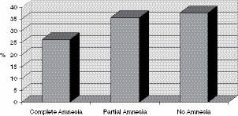
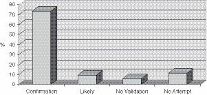
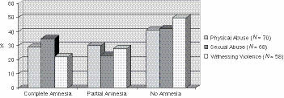
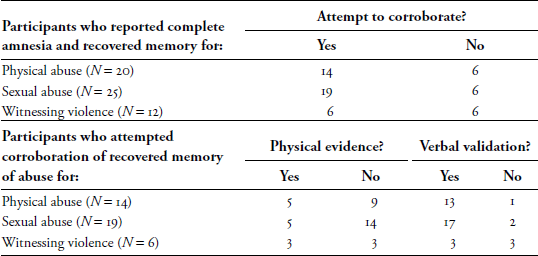

5
The Memory Wars
The Nature of Traumatic Memories of Childhood Abuse1
Dissociative amnesia is at the core of the controversy concerning traumatic memory of childhood abuse. The idea that overwhelming experiences can be forgotten and then later recalled has a long tradition, originating in major schools of thinking concerning intrapsychic experience. Early in the 20th century, French physician Pierre Janet (1907) described psychogenic amnesia and theorized that traumatic events could be dissociated from conscious awareness, only to be remembered at some later point in time. Sigmund Freud’s psychoanalytic theory included the belief that events that were traumatic or that resulted in intense intrapsychic conflict could be repressed and become unconscious, and could later be repeated and reexperienced (Freud, 1893–1895/1955, 1896, 1920/1955). As described in previous chapters, Freud’s notion of repression involves an active process—itself unconscious—that holds unacceptable or overwhelming thoughts and impulses outside of conscious awareness. These theoretical constructs laid the groundwork for modern investigators who were interested in the effects of traumatic events on memory.
In the clinical arena, dissociative amnesia has been observed for overwhelming and traumatic experience. For example, psychiatrist Bessel van der Kolk, MD, reported a clinical anecdote of a woman who was repeatedly arrested for pulling fire alarms and shouting for people to get out of buildings that she believed were on fire (van der Kolk & Kadish, 1987). The authors believed that she was completely amnestic for having survived the infamous Coconut Grove nightclub fire in which hundreds had perished more than 30 years previously. In the course of treatment, she recovered the memory of being in the burning building filled with smoke and toxic gases.
Numerous other anecdotal accounts of amnesia for traumatic childhood events have also been reported. For example, in the mid-1990s, the media reported the story of Ross Cheit, PhD, who was at the time an associate professor of political science at Brown University (National Public Radio, 1996). In 1992, Professor Cheit learned that his nephew was joining a boys’ chorus. He became quite depressed but could think of no reason for his depression. However, shortly thereafter he had the abrupt recovery of memories of childhood sexual molestation by an administrator of a boys’ chorus summer camp. Cheit set out to corroborate his memory. He found other men who as boys had been molested at the same camp, as well as two former employees of the camp who had witnessed some episodes of sexual molestation. He subsequently located and telephoned the perpetrator, who admitted to the acts. He filed civil suit against the organizers of the boys’ chorus; the case was settled in 1994. Cheit has gone on to establish the Recovered Memory Project, which has documented more than 100 cases of individuals where there is clear confirmation of the accuracy of recovered memories of traumatic events for which they previously had been amnestic (Cheit, 2010).
Perhaps even more striking are the many adult patients who report extensive amnesia for childhood events. To some patients, much of their childhood is foggy. Others can recount the events of their past but feel as though they happened to someone else. Many patients describe a kind of Swiss cheese memory with gaps in their recall of their early experiences, or even complete amnesia for any events over months or years. In clinical settings, this level of amnesia may be highly significant. Many patients with this kind of amnesia eventually recover memories that they had forgotten completely or in part.
In the current clinical arena, clinicians generally accept that some recovered memories of childhood abuse are essentially valid reports of repressed or dissociated early experiences. Indeed, for some patients, clinical work with recovered memories has been a vehicle to resolution of psychiatric symptomatology and has led to an enhanced understanding of the traumatic etiologies of their difficulties. However, as documented in the introduction and earlier chapters of this book, some academics have questioned the validity of repression and recovered memory and the existence of severe dissociative disorders—see, for example, Holmes (1990), Loftus (1993), McHugh (1992), Ofshe and Singer (1994), Piper (1997), and Pope and colleagues (Pope & Hudson, 1995; Pope, Hudson, Bodkin, & Oliva, 1998). Some of these academic skeptics and others have served on the Scientific Advisory Board of the False Memory Syndrome Foundation (FMSF), joining a coalition of parents who vehemently denied accusations that they had abused their children. Among the concerns expressed by the leadership and members of the FMSF were that: (a) clinicians were largely unaware of the science concerning memory, especially concerning memory distortion and the creation of pseudomemories; (b) there was no evidence to support the validity of repression or the accuracy of recovered memories; (c) certain self-help books, e.g., The Courage to Heal (Bass & Davis, 1988), encouraged persons to believe that they had been victims of abuse when they had particular nonspecific symptoms but no actual memory of abuse; (d) so-called recovered memory therapists were influencing patients to believe that they had been abused and, in some cases, to sue their parents or family members for having abused them; and (e) some clinicians were wrongly supporting the validity of extreme and bizarre organized child abuse, such as the existence of widespread organized satanic ritualized abuse.
The viewpoints and concerns expressed through the FMSF have been largely regarded by the mainstream mental health community as extreme and hyperbolic. In fact, although many traumatized patients have always remembered some abusive childhood experiences, most also recover additional previously unrecalled memories of abuse or additional details of partially recalled memories. Such memory recall occurs both within and outside of therapy sessions. Newly recalled trauma memories frequently precede a patient’s entry into psychotherapy (Chu et al., 1999; Herman & Harvey, 1997), which may be the reason why they seek treatment. Memories that are recovered—those that were forgotten and subsequently recalled—can often be corroborated and are no more likely to be confabulated than are continuous memories (Dalenberg, 1996; Kluft, 1995; Lewis, Yeager, Swica, Pincus, & Lewis, 1997).
Many of the relevant professional societies have issued statements concerning recovered memories of abuse (American Psychiatric Association, 2000; American Psychological Association, 1994, 1996; Australian Psychological Association, 1994; British Psychological Society, 1995). These reports all present a balanced view: that it is possible for accurate memories of abuse to have been forgotten only to be remembered much later in life, but that it is also possible that some people may construct pseudomemories of having been abused. Some of the statements note that therapists cannot know the extent to which someone’s memories are accurate in the absence of external corroboration, which may be difficult or impossible to obtain given the passage of time. And, as is true of all memories, recollections of childhood abuse may mix memory of actual events with fantasy, confabulation, misremembered details, or displacement or conflation of several events.
Amidst the hyperbole and acrimony in the debate about traumatic amnesia and recovered memory, there were legitimate concerns about clinical practices in regards to recollections of abuse. In the 1980s and early 1990s, the clinical community was largely uninformed about the scientific research concerning memory. But, the FMSF mischaracterized the extent and practice of recovered memory therapy, a type of treatment that was unknown to most legitimate clinicians. However, a minority of overzealous therapists did use unorthodox practices (including checklists of nonspecific symptoms thought to indicate past sexual abuse) designed to elicit and explore possible sexual abuse in patients with no memory of such experiences; such practices that place importance on a therapist’s idiosyncratic belief system were and are simply substandard.
In the 1990s and into the early years of this past decade, the memory debate was argued in the courts. Numerous lawsuits resulted in large settlements or judgments in civil cases (and some criminal convictions) against practitioners. For a review of legal cases, see Lipton, 1999 (note that the paper is written from the FMSF perspective). In retrospect, many of these lawsuits derived from clinical situations where there was uncritical acceptance of patients’ reports (however bizarre) and before there were established models of treatment for complex PTSD and dissociation. As Lipton observed, the number of cases being litigated has declined significantly, and to my knowledge no large settlements or judgments have been made against practitioners since 2004.
Several authoritative reviews have been written on the complex subject of traumatic amnesia (see Appelbaum, Uyehara, & Elin, 1997; Brown, 1995; Brown, Scheflin, & Hammond, 1998; Brown, Scheflin et al., 1999; Courtois, 1999; Dallam, 2002; Gleaves, Smith, Butler, & Spiegel, 2004; Pope, 1996; Scheflin & Brown, 1996; Williams & Banyard, 1997). Dalenberg (2006) and Brown, Scheflin, and Hammond (1998) have also provided excellent summaries of the legal challenges that are still being adjudicated in various jurisdictions in the United States and elsewhere. The focus in this chapter is to provide an integrated view of trauma and memory by reviewing recent findings concerning progress in cognitive memory research, issues concerning memory distortion, prevalence studies of traumatic amnesia, the psychobiology of traumatic memory, and clinical practice concerning traumatic memory.
THE CONTRIBUTIONS FROM COGNITIVE PSYCHOLOGY MEMORY RESEARCH
The central questions raised in the debate concerning amnesia and recovered memory are (a) Is traumatic memory different from ordinary memory? and (b) Is recovered memory of traumatic experiences essentially valid? Is it subject to distortion, or is it essentially false memory resulting from suggestive psychotherapy? The answers are far from simple. There have been serious problems even in finding a common language in the recovered memory debate. Different disciplines and schools of thought have vastly different viewpoints and terminology to describe observable phenomena. For example, the traditional clinical community tends to use terms such as the unconscious, suppression, and repression, invoking psychoanalytic mechanisms that involve active and dynamic intrapsychic processes. The cognitive psychology community favors terms such as normal forgetting, selective inattention, and nonconscious processes to describe similar phenomena. For this discussion, I am using the terms dissociative amnesia, traumatic amnesia, and recovered memory rather than repressed memory, as the latter term invokes a specific mechanism through which it is thought to occur.
The Malleability of Memory
Memories can be remarkably inaccurate at times. Earlier ideas going back to the 1950s erroneously held that precise details of a traumatic scene are permanently etched in memory in a potentially retrievable manner—so-called flashbulb memories (Brown & Kulick, 1977). Despite the difficulties of simulating traumatic experiences in the laboratory, investigators have studied the nature of memory in stressful experiences. Experimental procedures have included testing college students under demanding conditions (Eriksen, 1952, 1953; Tudor & Holmes, 1973) and exposing research participants to shocking photographic material (Christianson & Loftus, 1987; Kramer, Buckhout, Fox, Widman, & Tusche, 1991). Participants in these studies were often remarkably inaccurate in recounting details of their experience (e.g., the sequence of events), although experiences that were central to the individual seemed to be accurately retained. These investigations have suggested that an individual’s recall of events is a direct function of the intensity of the affect associated with the experience; the more emotional the experience, the better it is remembered. Thus, because traumatic events are by definition associated with higher emotional valance, they may be better remembered.
However, aspects of actual traumatic experiences can also be misremembered. The central features of traumatic events are generally accurately retained, but many of the peripheral details of the experiences can be inaccurate. For example, studies of memories of the horrifying explosion of the space shuttle Challenger in 1986 showed that many individuals—especially children—had incorrect recollections of the events (Neisser & Harsch, 1992; Warren & Swartwood, 1992). Psychologist Elizabeth Loftus, PhD (1993), has described other shocking situations such as war and accidents that were misremembered. This is consistent with my own personal experience. I long had a vivid memory of how I heard about the assassination of President John F. Kennedy. In my recollection, I had been in my sixth-grade classroom when a friend and classmate burst into the room saying that the President had been shot. There is obviously no question about the fact of the assassination, but when I met up with my former classmate at a high school reunion many years later, we were able to determine that we were actually in our seventh-grade homeroom during the incident.
The role of suggestion in shaping actual memory content has also been well established in laboratory studies (Loftus, 1979; Loftus, Korf, & Schooler, 1989; Schooler, Gerhard, & Loftus, 1986; Schumaker, 1991). In some protocols, such as those designed by Loftus and research psychologist James Schooler, PhD, participants were shown pictures, slides, or videotape of an event and were then asked to recall the event. When participants were given cues or suggestions regarding the event, they often made errors concerning what they recalled. For example, in a protocol for one experiment (Schooler et al., 1986), participants were shown slides depicting an automobile accident. For one set of participants, the slides did not contain a stop sign, but its existence was suggested in a question that was asked after they viewed the slides. This post-event suggestion was quite subtle: “Did another car pass the Datsun while it was at the intersection with the stop sign?” or “Was the Datsun the same color red as the stop sign?” When later asked, many participants reported seeing the sign and could provide a verbal description of the sign, particularly when an individual was asked to mentally visualize a memory. It is important to understand that actual memory content is changed—in this case through the retrieval mechanism. In fact, memory content can be influenced at all stages of the memory process: perception, consolidation (organizing and encoding), storage, retrieval, and reconsolidation.
In these studies and many others, a person’s conviction concerning the accuracy of memories was not related to what actually happened. Individuals typically have a high level of subjective confidence in the accuracy of their memories. It has long been known that study participants have equal confidence in memories that were suggested as in truly accurate memories (e.g., Cole & Loftus, 1979; Greene, Flynn, & Loftus, 1982; Loftus, Miller, & Burns, 1978). Even if they have recollections that are distorted or false, persons are generally are convinced that their memories represent what actually happened (which explains many an argument in which members of a couple vehemently disagree about past experiences that they shared but remember differently). This phenomenon has clear implications for work in psychotherapy. Even when patients have clear memory content and are convinced of their validity, the therapist cannot automatically assume the accuracy of their recall.
Pseudomemories: Memories for Events That Never Occurred
Despite evidence that memory content can be influenced by suggestion, emotional arousal, and personal meaning, the bulk of memory research actually supports the accuracy of remembered events that are known to have occurred. However, there is also evidence that persons can “remember” events that did not occur. One personal pseudomemory was described by the Swiss psychologist, Jean Piaget (1962), the well-known theorist of cognitive development in childhood. For many years during his childhood, Piaget had a clear visual memory of someone trying to kidnap him from his stroller when he was two years old. The memory also involved his nanny chasing away the potential kidnapper and then going home and telling the family. Years later, when Piaget was 15, the nanny returned to the Piaget family and confessed that the incident had never occurred. Her motive had been to enhance her position in the household, but she subsequently had suffered guilt about the fabrication and about the watch she had received as a reward.
In a National Public Radio show (Gross & WHYY-FM, 1989), Fresh Air host Terry Gross interviewed Julia Child, the French Chef, who described other pseudomemories. She reported being repeatedly approached by fans who insisted they “saw” her throw a chicken on the floor and “saw” her drink wine from a bottle. Mrs. Child denied ever having done these things, although she admitted to once having flipped a potato pancake onto the stove. Television viewers may have seen numerous Julia Child parodies, including a Saturday Night Live show in which she was lampooned in a sketch where she tried to bone a chicken and created mayhem in her kitchen (Michaels & Wilson, 1978). It is possible that viewers may have confused such parodies with the actual cooking show, suggesting that memory content may consist of a combination of actual events, displaced events, and fantasy. When I have used this anecdote in lectures, I have intentionally misstated the identity of the actor who portrayed Julia Child as Chevy Chase; in fact, it was actually Dan Aykroyd. I further enhance the suggestion by asking members of the audience to see if they can picture the scene in their minds. I then debrief the audience and point out that if I hadn’t disclosed the suggestion, some of them would have fully incorporated the pseudomemory and would have subsequently recalled the wrong actor in the sketch.
An experiment by Loftus and colleagues (1993) further demonstrated that vivid visual memories can be created simply by being told of events by a trusted other person. In the experimental protocol, a family member attempted to instill a memory of an episode of being lost at the age of 5 in another family member. All family members agreed that the episode had never occurred. In one example, a story was told to Chris, age 14, by his older brother:
It was 1981 or 1982. I remember that Chris was 5. We had gone shopping at the University City shopping mall in Spokane. After some panic, we found Chris being led down the mall by a tall, oldish man (I think he was wearing a flannel shirt). Chris was crying and holding the man’s hand. The man explained that he had found Chris walking around crying his eyes out just a few moments before and was trying to help him find his parents. (p. 532)
Over the following days, Chris began to have fragmentary memories of this event. By the end of two weeks, he had a vivid memory of being lost:
I was with you guys for a second and I think I went over to look at the toy store, the Kay-Bee toy, and uh, we got lost and I was looking around and I thought, “Uh-oh. I’m in trouble now.” You know. And then I … I thought I was never going to see my family again. I was really scared, you know. And then this old man, I think he was wearing a blue flannel, came up to me … he was kind of old. He was kind of bald on top … he had like a ring of gray hair … and he had glasses.
Even after being told about the experiment, Chris still had trouble believing that the incident had not occurred. Although this experiment has been criticized for ethical and methodologic problems (Crook & Dean, 1999), it does illustrate the potential creation of pseudomemories when an individual is urged to believe false events by a trusted other person, which has obvious implications for the process of psychotherapy.
Is there a population of persons who are susceptible to creating pseudomemories? Psychologist Ira Hyman, PhD, and colleagues attempted to implant false memories of childhood events in college students. In serial interviews over a few weeks, participants were asked to describe both real events (from information supplied by parents) and told that they had experienced events that hadn’t actually occurred. Over several interviews, approximately 8% of participants developed vivid pseudomemories of false events, as in the following description (Hyman, Troy, & Billings, 1995, p. 191) (I = interviewer, S = subject):
First Interview
I: The next one is attending a wedding. At age 6 you attended a wedding reception and while you were running around with some other kids you bumped into a table and turned over a punch bowl on a parent of the bride.
S: I have no clue. I have never heard that one before. Age 6?
I: Uh-huh.
S: No clue.
I: Can you think of any details?
S: Six years old, we would have been in Spokane, um, not at all.
Second Interview
I: The next one was when you were 6 years old and you were attending a wedding.
S: The wedding was my best friend in Spokane, T___. Her brother, older brother was getting married, and it was over here in P___, Washington, because that’s where her family was from and it was in the summer or spring because it was really hot outside and it was right on the water. It was an outdoor wedding and I think we were running around and knocked over like the punch bowl or something and um made a big mess and of course got yelled at for it. But uh.
I: Do you remember anything else?
S: No.
I: OK.
In a similar experiment, researchers found that vivid pseudomemories increased from 9% to 25% if participants were asked to internally visualize the false events in detail (Hyman & Pentland, 1996). These studies support the contention that pseudomemories can be induced, particularly with repeated suggestion, rehearsal, and the use of imagery. It should be noted, however, that only a minority of participants responded to cues to remember false events, suggesting that certain individuals may have more vulnerability than others to creating pseudomemories.
The suggestibility of younger children has been studied by psychologists Stephen Ceci, PhD, and Mary Lyn Huffman, PhD (1997). In their studies, preschool children were interviewed on multiple occasions and were given suggestions about fictitious events. For example, in one protocol (Ceci, Huffman, Smith, & Loftus, 1994), children were asked to “think real hard before answering” a variety of different events, including a presumably false experience of “get[ting] your hand caught in a mousetrap and go[ing] to the hospital to get it off.” Over the course of 10 interviews, a majority of 3- and 4-year-old children remembered these false events as true, as did a lesser number of 5- and 6-year-olds. Subsequent to the experiments, neither parents nor researchers were able to convince some of the children that the events had not occurred. Videotapes of some of the interviews of children were shown to experts in the field of children’s forensic testimony. These experts were unable to distinguish between true and false accounts. These studies support the intuitive notion that younger children have difficulty distinguishing between reality and fantasy, and they are vulnerable to suggestion. This type of research further complicates the issue of validity of memory, not only in children who report abuse, but in adults as well. Even if adults report that they have always remembered past events, it is possible that the original events could have been related to fantasy or suggestion, or misremembered.
The 1989 criminal prosecution case of Paul Ingram added evidence to the notion of the creation of pseudomemory. As described by social psychologist Richard Ofshe, PhD (1992), and Loftus (1993), Ingram, a devout Catholic and the chair of his county Republican Party committee, was accused of the sexual abuse of his daughter and other children and participation in satanic cult activities including ritual sexual abuse and murder. At first, he denied everything. However, after interrogation and pressure from advisors, Ingram began to have vivid memories of his involvement in the alleged abuse. Ofshe, an expert witness, attempted to test Ingram’s suggestibility. He told Ingram that he had been accused of forcing his son and daughter to have sex together, an event that his children agreed had not occurred. Ingram initially had no memory of this event, but after being urged to think about the scene, he began to vividly recall it and eventually confessed to the alleged activities. This apparent pseudomemory does not necessarily invalidate Ingram’s other recollections. In fact, another psychologist involved with the case reported that Ingram pled guilty to six counts of child molestation after “care was taken to eliminate those allegations that could have been contaminated by the investigator’s questioning or by contact with the daughters and Mr. Ingram” (Peterson, 1994, p. 443). However, this case does raise issues concerning the effect on memory of questioning, suggestion, and interrogation in both legal and clinical settings.
From the perspective of the FMSF, pseudomemories of traumatic events that never occurred derive principally from suggestive therapy techniques. In fact, several other mechanisms are much more likely to produce inauthentic reports of childhood abuse. Contagion is a powerful mechanism in which individuals unconsciously adopt other persons’ personal narratives as their own. One of the liabilities of specialized treatment programs for trauma patients is that patients are exposed to the personal stories of other patients and can possibly come to believe that they too were similarly victimized. Closely related to the mechanism of contagion is what I call unconscious elaboration, in which individuals come to erroneously believe that they were (or may have been) traumatized in ways that they do not remember or have only vague hints about, as in the following example:
Meg, a 52-year-old single financial advisor, had been in various forms of psychotherapy most of her adult life for reasons that were unclear but compelling. She had always felt that something was missing in her life, and that kept her feeling isolated from intimacy with other people. Attractive, accomplished, and articulate, Meg had always wanted marriage and children, but these dreams had eluded her. She often wondered if her difficulties stemmed from secrets buried by her Christian Science family’s insistence on dwelling on only the positive and not acknowledging illness and distress, including secrets about sexual abuse. She recalled her father as a sexual man who had confided in her that he had no active sexual life with her mother. In a therapy session, while recalling various times when she had been ill as a child and received no medical care, Meg had the memory of being a young child and feeling her father’s body lying on top of her while he kissed her on the mouth. She immediately concluded that this was evidence of the sexual abuse she had long suspected. However, as she continued to think about the memory, she recalled that as a child she had come down with croup (swelling of the vocal cords resulting in a barking cough and difficulty breathing) and that there were family stories of her father performing mouth-to-mouth resuscitation, forcing air into her lungs to keep her alive. This was not the confirmation she sought, and the question of possible childhood sexual abuse remained unanswered.
There are clinical situations where patients fail to perceive that what they already remember accounts for their current distress and difficulties, and they continue to look for evidence of more obvious and egregious abuse. These kinds of situations need to be managed with particular care. While not ruling out the possibility of unremembered abuse, clinicians should counsel restraint in advising patients on how to approach their search for memories, as in the following clinical illustration:
Sarah, a 47-year-old marketing executive, consulted me for her long-standing depression and current life adaptations, which included a sense that she was unworthy of anyone else’s care or attention. Many of her difficulties clearly derived from her childhood experience where she was devalued by her parents for being a girl, unlike her two brothers who were praised and supported. Her parents were either distant or angry and physically abusive. Despite all the chaos that she experienced growing up, Sarah did quite well, marrying a kind and loving (though somewhat distant) man and raising a family in addition to having a successful career. However, she was left with a sense of lingering emptiness and an indefinable sense of being defective. It was a struggle for her to know how to ask anyone else for help despite her sense that others generally liked her.
In the course of the evaluation, Sarah told me that she had always wondered about whether she had been sexually abused by her father. Although she had no memory of such abuse, she wondered if that was the reason she felt defective and somewhat alienated from others. Plus, she added, she was aware of her father’s sexuality and that on various occasions he looked at her in an inappropriately sexual way. Sarah had no memories of sexual abuse (despite trying to remember), and her memory for her childhood was generally intact and continuous. After some continued discussion, I remarked that while I couldn’t rule out sexual abuse, it didn’t seem likely given her efforts to remember it and her years of psychotherapy. I explained that the history that she already knew could fully account for her psychological distress. I suggested that while we couldn’t rule out the possibility of sexual abuse, her efforts should be directed at fully understanding how profoundly the early attachment problems and persistent denigration affected the way she came to feel about herself and what she deserved from others. Sarah seemed generally relieved by our discussion.
Under different circumstances, it might have been entirely possible for this patient to falsely believe that she had been sexually abused (and maybe even to develop pseudomemories), because her perception of her childhood difficulties were not enough to justify how bad she sometimes felt. However, developing erroneous beliefs about sexual abuse would have been a red herring at best and a major impediment to progress at worst.
The contributions of memory research raise many thorny questions, some of which challenge clinical observations. For example, cognitive psychology research does not empirically substantiate the existence of the psychoanalytic theory of repression, despite the utility of this concept in clinical practice. Memory research does not provide an explanation of how traumatic memories that were once conscious become nonconscious other than through normal forgetting, selective inattention, or avoidance. However, it is problematic to extrapolate experimental findings to clinical situations. As several investigators have noted, experimental conditions are often quite different from actual clinical situations—so-called ecological factors (Erdelyi, 1985; Holmes, 1974, 1990; Schacter, 1990). Experimental investigations of traumatic memory are limited by the ethical constraints, and thus cannot expose participants to truly overwhelming and prolonged traumatic events. Thus, results from experimental psychology may be limited in understanding the actual impact of traumatic events. Nonetheless, a clear understanding of the mechanisms of memory is critical in evaluating clinical reports of traumatic memory and clinical situations.
STUDIES OF TRAUMATIC AMNESIA
Memory loss as a component of stressful events is a part of our cultural heritage (e.g., stories in literature and film about persons who have been through some kind of trauma and lose their sense of identity and/or memory of the event). As discussed in previous chapters, amnesia for traumatic events first experienced in adulthood is relatively uncommon but does occur. In past decades, amnesia was observed in combat veterans from World War I (W. Brown, 1919; Thom & Fenton, 1920) and World War II (Henderson & Moore, 1944; Sargant & Slater, 1941; Torrie, 1944), and in Holocaust survivors (Jaffe, 1968; Kuch & Cox, 1992; Wagenaar & Groenweg, 1960). However, given the higher dissociative capacity of some children, amnesia is much more common for traumatic events that occur at an early age.
Amnesia for Childhood Sexual Abuse in Clinical Populations
How common is amnesia for childhood events in the aftermath of trauma? There has been an explosion of studies in this area published since 1987. In a review paper on the evidence for dissociative amnesia and recovered memory, Brown, Scheflin, and Whitfield (1999) identified 68 studies, all of which found some degree of dissociative amnesia following sexual abuse. Since that time, more than two dozen additional papers have been published in this area. Given the number of papers, I will not attempt to summarize them all, instead presenting only those that are of particular interest from a clinical or historical perspective. The first published study concerning the nature of amnesia for childhood abuse and validity of recovered memories was reported by Herman and her colleague Emily Schatzhow (1987). Their study involved 53 women who had sought treatment in time-limited incest survivors’ groups at Cambridge Hospital in Massachusetts. A majority of these women reported that they had experienced some kind of amnesia for their sexual abuse at some time in the past (Figure 5.1). Twenty-six percent (26%) reported that they had severe amnesia (e.g., at some point had no memory for the abuse), 36% reported moderate amnesia (e.g., remembered only some or part of the events), and the remaining 38% always fully remembered the abuse.
Figure 5.1 Percent of Adult Patients Reporting Amnesia for Sexual Abuse (N = 53)

More amnesia was correlated with early age of onset of the abuse, chronic abuse, and severity of abuse, such as violent or sadistic abuse. Perhaps even more notable was that the overwhelming majority of these women were able to find some corroborating evidence of the abuse (Figure 5.2). Seventy-four percent (74%) were able to find convincing evidence that the incest had occurred, such as family members who confirmed it, or in one case, papers and other evidence from a deceased brother who had been the abuse perpetrator. Another 9% found family members who indicated that they thought the abuse had likely occurred but who could not confirm it. Eleven percent (11%) made no attempt to corroborate their abuse, leaving only 6% who could find no validating evidence despite efforts to do so.
Figure 5.2 Percent of Adult Patients Who Sought Corroboration of Sexual Abuse (N = 53)

Rates of amnesia remarkably similar to these were found in several subsequent studies. In one study (Gold, Hughes, & Hohnecker, 1994), patients who reported sexual abuse at an initial intake at an outpatient mental health center were asked detailed questions about their ability to recall the abuse. Thirty percent (30%) reported periods of no memory of the abuse, 40% had some partial memory (i.e., evidence of abuse but no clear memory, memory of some aspects, or memory of some but not all episodes), and 30% reported complete and continuous memory. Another study investigated the experiences of 60 patients in psychotherapy who recalled being sexually abused (Cameron, 1994). Of the participants in this study, 42% had a period of complete amnesia for the abuse, 23% reported partial amnesia, and 35% had no amnesia.
Psychologists John Briere, PhD, and John Conte, PhD (1993), recruited therapists to administer a questionnaire to their patients who reported sexual abuse memories. The questionnaire consisted of a variety of scales about current symptomatology and past life experiences. Of the 450 subjects who reported childhood sexual abuse, 54% reported having had some amnesia for the abuse between the time of occurrence and age 18. Greater levels of amnesia were correlated with greater current levels of psychiatric symptoms, early age of onset and severity (e.g., multiple perpetrators, physical injury, fear of death if they revealed the abuse). Interestingly, the researchers also asked about factors that were likely to produce a greater level of psychological conflict, such as enjoying aspects of the abuse or accepting bribes. These factors were not correlated with amnesia, suggesting that the physical noxiousness of the experience, rather than intrapsychic conflict, may produce amnesia.
Herman and psychologist Mary Harvey, PhD (1997), reviewed detailed clinical evaluations at the Victims of Violence program at Cambridge Hospital for documentation of amnesia and corroboration of their abuse experiences. For those reporting sexual and physical abuse or witnessing of intrafamilial violence, approximately half (53%) reported continuous memory, 17% described both continuous and delayed recall (for different incidents of abuse), and 16% reported a period of complete amnesia for their abuse followed by delayed recall. Forty-three percent (43%) spontaneously described some corroboration of their abuse experiences, and there were no significant differences in the rates of corroboration between those with and without delayed recall. Most patients cited reminders of the trauma or a recent life crisis or milestone as the precipitant for recovering memory; only 28% described psychotherapy as the reason for memory recovery. In fact, the recall of new, disturbing memories was frequently cited as the reason these patients sought psychotherapy.
A study by Loftus and colleagues (Loftus, Polonsky, & Fullilove, 1994) is particularly interesting given Loftus’ advocacy of the false memory hypothesis. More than half (54%) of 105 women in outpatient treatment for substance abuse reported childhood sexual abuse. Most (81%) reported remembering part or all of the abuse (partial amnesia or no amnesia), and 19% reported that they forgot the abuse for a period (complete amnesia).
The rates of amnesia in the studies cited in this chapter and others in the literature are remarkably consistent. As noted in Brown, Scheflin, and Whitfield’s (1999) review, “[R]oughly one-third of patients across [the 25 clinical] studies reporting that they had completely forgotten the abuse for some period of time. Substantial forgetting of the childhood sexual abuse was found in every clinical study, without exception” (p. 54).
Amnesia for Childhood Sexual Abuse in Nonclinical Populations
Studies in nonclinical populations of individuals with documented histories of sexual abuse—who presumably have fewer distressing symptoms than patient groups—have nonetheless shown high rates of amnesia for childhood abuse. Psychologists Linda Meyer Williams, PhD, and Victoria Banyard, PhD, studied women (Williams, 1994) and men (Williams & Banyard, 1997) who had been treated for documented sexual abuse 17 years earlier in a city hospital, and asked them to participate in a study about hospital services. Thirty-eight percent (38%) of the women and 55% of the men did not recall the abuse or chose not to report it. Although the investigators did not ask specifically about the documented abuse, the participants were asked about sexual abuse experiences; many of the women in Williams’ studies who did not report the early abuse did disclose other intimate details about their lives, including subsequent sexual victimization. Hence, there is a strong implication that many were actually amnestic for the experiences. There was a correlation between amnesia and younger age at time of abuse, which would be expected because verbal recall of events is limited for events experienced before age 3. However, this factor alone could not explain the degree of amnesia in the subject population. Few of the women had been under 3 years of age at the time of their abuse, and there was actually more amnesia in the 4- to 6-year-old group versus the under age 3 group. More amnesia was associated with perpetrators being family members. Amnesia was not correlated with any particular kind of abuse or severity of abuse (e.g., fondling versus penetration).
Psychologists Shirley Feldman-Summers, PhD, and Kenneth Pope, PhD (1994), studied another nonclinical population. They surveyed 330 randomly chosen psychologists and found that 24% reported a history of physical abuse and 22% reported a history of sexual abuse. Of the participants with histories of abuse, 40% reported a period when they had no memory for the abuse, and 47% reported that they had obtained some kind of corroboration of the abuse experiences. Fifty-six percent (56%) identified psychotherapy as a factor in recalling the abuse.
Corroboration of Childhood Abuse
Several of the studies cited previously involved asking about participants’ attempts to validate their memories of childhood abuse and reported relatively high rates of some kind of corroboration (Feldman-Summers & Pope, 1994; Herman & Harvey, 1997; Herman & Schatzhow, 1987). At least two studies have used relatively stringent standards of corroboration. Psychiatrist Richard Kluft, MD (1995), surveyed the detailed records that he had kept of 34 patients with dissociative identity disorder (DID) that he had flagged for either confirmed or disconfirmed memories. For corroboration of memories, he required a report (either directly or through the patient) that another person, such as a family member, relative, or friend, had actually witnessed the abuse, or a confession by the alleged perpetrator of abuse. Nineteen of the patients (56%) had been able to obtain confirmation of childhood abuse. Three of the patients (9%) had memories that were later disconfirmed. Of the 19 patients who obtained confirmation of particular abusive experiences, 10 (53 %) had always remembered the events, and 13 (68%) first recalled specific events in therapy. Two patients were able to ascertain that they had both valid memories and pseudomemories. The use of hypnosis was not a factor in the validity of memory recall; many of the corroborated memories (85%) were accessed through hypnotic techniques.
In the study that our McLean group published in 1999 (Chu et al., 1999), we attempted to replicate findings concerning childhood abuse experiences and resulting amnesia in psychiatric patients, the circumstances concerning memory recovery, and the extent to which patients had been able to corroborate their recovered abuse memories. The participants in our study were 90 patients in the Trauma and Dissociative Disorders Program at McLean. Not surprisingly, they endorsed a high level of childhood maltreatment, often having been the victim of multiple types of chronic abuse beginning at an early age. They also had experiences concerning amnesia and recovered memory consistent with previous studies (Figure 5.3).
Figure 5.3 Percent of Participants With and Without Amnesia by Type of Abuse

Participants endorsed both complete and partial amnesia for all types of abuse—physical and sexual abuse and witnessing violence—generally in the 20% to 30% range. Our findings concerning corroboration were quite striking (Table 5.1). We asked patients whether they had ever sought to validate abuse experiences that they had previously forgotten and subsequently recovered, and found that a high percentage of those who reported physical and sexual abuse had made some attempt to do so. We considered the recovered memory of abuse experiences to have been corroborated if there was concrete physical evidence (e.g., scars, medical or police records) or if the participants told us that others (such as a family member or the perpetrator) had confirmed that they knew the abuse had occurred. We did not accept reports that a family member thought that the abuse might likely have occurred or that a sibling had been similarly abused as corroboration of recovered memories.
Table 5.1 Corroboration of Recovered Memories of Childhood Abuse

Approximately three-quarters of participants who had amnesia and recovered memory of physical and sexual abuse had made some attempt to corroborate their memories; fewer participants felt the need to corroborate witnessing violence. There was little physical evidence to validate recovered memories, but for physical and sexual abuse, the overwhelming majority of participants had been able to find others who confirmed that the abuse had occurred: 13 of 14 (93%) for physical abuse and 17 of 19 (89%) for sexual abuse.
Critiques of Studies of Amnesia for Childhood Abuse
One of the criticisms of prevalence studies of childhood trauma and subsequent amnesia is that many of the studies are based on a self-report methodology, and individuals may falsely report early abuse (for reasons including confusion, confabulation, and fantasy, among others). However, self-report methodology is widely used in clinical research, and there is no reason to suspect that traumatized persons are more likely than others to distort or fabricate their histories. In fact, false-negative responses concerning amnesia are more likely than false-positive ones. For example, if an individual develops amnesia for childhood abuse and has not yet recovered those memories, that individual would be categorized as having “no amnesia.”
There is another source of possible false-negative responses. When asked about childhood maltreatment, research participants do not always characterize clearly abusive experiences as such. For example, in Widom and Shepard’s (1996) prospective study of recall and accuracy of sexual abuse, significant percentages of both men and women with confirmed childhood sexual abuse did not report it when interviewed 20 years later. However, it is unclear whether this was the result of traumatic amnesia, normal forgetting, or—as was the case with more men than women—that they did not acknowledge the childhood sexual encounters as sexual abuse.
There have been other criticisms of the methodology of various studies, including the vagueness in the definition of forgetting or remembering ; not taking into account the phenomena of normal forgetting and normal infantile amnesia for very early experiences; the lack of clear, independent corroboration of abuse experiences; sampling biases; and methods or questions used in inquiries (Loftus, 1993; Ofshe & Singer, 1994; Pope & Hudson, 1995). However, the weight of the evidence is clear, as articulated by Brown, Scheflin, and Whitfield (1999):
What is the fairest conclusion that can be made based on the totality of the evidence across all 68 studies on forgetting childhood sexual abuse? The reader should note that not one of the 68 studies failed to find complete forgetting/recovery of abuse memories in at least some portion of the sampled respondents.… The consistent finding favoring dissociative or traumatic amnesia across 68 separate studies representing five diverse research designs and using different methods of measurement by more than 100 authors in nearly all independent studies across several countries greatly increases the likelihood that dissociative or traumatic amnesia demonstrated in each of the 68 studies is a real phenomenon, as opposed to being an artifact of methodology (e.g., retrospective or prospective), sample variation, or measurement error that might or might not have occurred in single studies. (pp. 67–68)
MULTIPLE MEMORY SYSTEMS
In terms of personal experience, individuals tend to equate the term memory with verbal and visual memory—mental narratives and images associated with past experiences. However, since the late 19th century, the study of memory has produced descriptions of several forms of memory, suggesting that memory is not a unitary entity but more likely a multidimensional function consisting of various domains and representations of recollections (Polster, Nadel, & Schacter, 1991). Separate and distinct memory systems have been described by many investigators (Milner, 1962; Tulving, 1972, 1983). Harvard research psychologist Daniel Schacter, PhD, ultimately coined the currently accepted descriptive distinctions of two primary memory systems: explicit and implicit memory (Graf & Schacter, 1985; Schacter, 1987).2 Explicit memory consists of the recollection of prior experiences with intentional or conscious recall and is generally considered to include verbal and visual memory. Implicit memory refers to performance or behavior based on prior experiences of which one has no conscious recall, including conditioned responses, “priming,” and procedural memory (nonconscious motor memories, e.g., bicycle riding). Implicit memory is likely also to be the active process in affective and somatic memory—that is, recall or reexperience of emotions and bodily sensations (Crabtree, 1992; Erdelyi, 1990).
Research on “priming,” a type of implicit memory, sheds further light on the nature of conscious and nonconscious mental processes (Schacter, 1985, 1992). Priming is generally a laboratory procedure that refers to facilitation of a simple cognitive task (e.g., object recognition or word completion) as a result of a prior encounter with the cue and independent of conscious recollection of that encounter. For example, college student research participants who have previously been shown lists of words are much more likely to recognize those words in other lists even after several weeks when they have no conscious recollection of the original words. Even more remarkably, patients with organic amnesia (who for reasons of brain injury are unable to prospectively retain conscious information) do similarly well on such tasks, indicating that implicit memory is a nonconscious process that operates quite separately from conscious recall. The findings strongly suggest that memory and memory processing are highly complex, with multiple memory systems involved in the acquisition, retention, and recall of information. This theory of separate and independently functioning memory systems supports the clinical observations in PTSD patients that certain kinds of emotions and somatic sensations may be experienced without conscious awareness of their traumatic origins.
Prospective studies by Burgess and her colleagues of 42 children who had been sexually abused in military day care centers highlighted the differences between types of recall (Burgess, Baker, & Hartman, 1996; Burgess & Hartman, 2005). In their studies, the investigators interviewed the children and their parents several times during the 15 years after the documented abuse. The mean age of the children at the time of abuse was 3.6 years. In the investigations following the revelation of their abuse nearly all of the children had verbal memory of the experience (i.e., they were able to verbally describe what had happened). When they were interviewed 5 to 15 years later, only some were able to verbally recall what happened, although many had behavioral reenactments of their abuse. Is this evidence of traumatic amnesia? Possibly, but alternative explanations include normal forgetting and immature memory functioning in the very young children. However, this study is particularly interesting; some of the accounts of the aftereffects of the abuse demonstrate the different kinds of recollections of some of the children:
Tim had initially disclosed to being driven to an off campus house, tied to a tree in the woods and being physically hit. He said that something had been pushed into his bottom. Somatic and behavioral memories were noted in his persistent complaints of anal pain and fear that something was in his rectum. He would clench his legs, defecate and urinate on the floor and rug and avoid using the bathroom. Abdominal pains were frequent as well as the preoccupation that something was in his rectum. He and his parents did not link this to the abuse itself, although he could recollect that he was hurt at the day care center. (Burgess, 2008)
This account demonstrates the presence of both explicit and implicit memory of the abuse, and that the two systems can be dissociated from each other in conscious awareness. The psychological gain of the dissociation of information from the different memory systems is that both the parents and child can avoid being overwhelmed by the full impact of the experience and the aftereffects of the abuse by recalling and experiencing it in a compartmentalized way.
Terr observed the existence of various kinds of memory in response to traumatic events in childhood. In one study of preschool children who had been subjected to known traumatic events (Terr, 1988), verbal recall of the events depended on the child’s age when traumatized and on the chronicity of the trauma. Children under 3 years of age tended to have less verbal memory of their experiences, a finding that is consistent with the development of verbal abilities around this period (Miller, 1979; Williams & Banyard, 1997). However, even some of these very young children appeared to have retained some type of nonverbal learning concerning the traumatic events, engaging in behavioral reenactments (e.g., trauma-related play, fears, and dreams) despite having no conscious recall. In her 1988 study of 20 children who were under the age of 5 at the time of the trauma, Terr noted that
Ages 28 to 36 months, at the time of the trauma serves as an approximate cut-off point separating those children who can fully verbalize their past experiences from those who can do so in part or not at all.… At any age, however, behavioral memories of trauma remain quite accurate and true to the events that stimulated them. (p. 96)
Bruce D. Perry, MD, PhD, a noted expert on the effects of trauma on children, has also observed that implicit recall of trauma can exist even when there is no explicit memory. In a 1999 book chapter titled “Memories of States: How the Brain Stores and Retrieves Traumatic Experience,” Perry provided several fascinating (albeit tragic) examples of unusual expressions of recall in traumatized children:
D. is a nine-year-old boy. He was victim of chronic and pervasive physical threat and abuse from his biological father. From the age of two until six he was physically and sexually abused by his father. At age six he was removed from the family.… He suffered from serious brain injury such that he was in a coma for eight months following the injury. He continues to be difficult to arouse, is nonverbal, no form of meaningful communication is noted. In the presence of his biological father, he began to scream, moan, his heart rate increased dramatically. Audiotapes of his biological father elicit a similar response. Clearly the sensory information (sounds, smells) which was associated with father was reaching this child’s brain in a way that elicited a state memory. This child’s brain did not have the capacity to have conscious perception of the presence of his father.… Exposure to his father elicited no cognitive, narrative memory; his agitation and increased heart rate were manifestations of affective and state memories which were the products of many years of traumatic terror which had become associated with his father—and all of his father’s attributes. (p. 25)
In another example, Perry described implicit recall in a child who was too young to have narrative explicit memories of an extremely traumatic event:
K is a three-year-old boy referred to our clinic following the murder of his eighteen-month-old sister.… Approximately two months after the event, a semi-structured interview was conducted. During the non-intrusive part of the interview, K was spontaneous, interactive, smiling and age-appropriate in his play. When the direct questioning [about witnessing the murder] began, his heart rate increased but his behaviors remained constant. Within five seconds of being asked about his sister, his heart rate dramatically increased and his play stopped. He broke eye-contact, physically slowed and became essentially non-responsive. This dissociative response was accompanied by a decrease in his heart rate to the previous baseline level of the free play portion of the interview. Similar alterations in heart rate and induction of a protective dissociative response could be elicited by exposure to cues associated with the murder. In this situation, this child, upon direct questioning, gave no verbal or narrative information about the event. This lack of a narrative memory, however, did not mean that the child had not stored the experience. Clearly, he demonstrated clear and unambiguous evidence of emotional and state memories when verbal or non-verbal cues were used to evoke the event. (pp. 30–31)
As in these examples, multiple memory systems are active in the recall of trauma, and the various parameters of traumatic experience—visual, verbal, affective, somatic, and behavioral—can be later reexperienced in a variety of ways, both conscious and nonconscious. Thus, it is important in the clinical arena to have a broad understanding of the diverse ways that traumatic experience can later manifest, which is necessary to adequately treat patients who suffer from the effects of early abuse. In particular, understanding the implicit memory of behaviors, feelings, and sensations of trauma in the absence of—or dissociated from—conscious explicit memory can help patients (and their treaters) make sense of their current experiences.
THE NEUROBIOLOGY OF TRAUMATIC AMNESIA
What are the underlying causes and mechanisms for traumatic amnesia? In many of the aforementioned examples, neurodevelopmental factors as well as psychodynamic and cognitive mechanisms have profound effects on persons’ inability to recall traumatic events. However, there are likely additional neurobiological etiologies for amnesia, particularly in relation to the pervasive amnesia for “whole segments of childhood” (Terr, 1991, p. 16) as a response to chronic traumatization at an early age. The forgetting of all memories—not just the negative ones—implies that the underlying mechanism for this kind of amnesia is not repression of overwhelming experiences or selective inattention to noxious events. Instead, the massive failure to integrate entire periods of childhood strongly suggests that intensely traumatic experiences may result in a different way of processing and storing information, perhaps mediated by chronically elevated levels of stress-induced neurohormones. This model is consistent with the concept of dissociation, in which various mental contents exist in different states held separately from each other, which may derive from numerous different mechanisms.
The psychobiology of learning and memory suggests that traumatic memory is quite different from ordinary memory. Many investigators propose that the symptoms of PTSD result from the multifaceted neurohormonal changes that occur in response to acute and chronic stress (for reviews, see Charney, Deutch, Krystal, Southwick, & Davis, 1993; Krystal, Bennett, Bremner, Southwick, & Charney, 1996; van der Kolk, 1996; Vermetten & Bremner, 2002a, 2002b). These changes may powerfully affect the ways in which memory is encoded, stored, and retrieved.3 At least three stress-responsive neurohormonal systems have emerged as critical in the development of PTSD: (1) catecholamines, including adrenaline, noradrenaline, and dopamine, which modulate bodily activation and arousal particularly in stressful emergency situations; (2) hormones of the hypothalamic-pituitary-adrenal (HPA) axis, including corticotropin-releasing factor (CRF), adrenocorticotropic hormone (ACTH), and the glucocorticoids, which have an essential role in maintaining physiological and psychological homeostasis; and (3) endogenous opioids, which are opiate-like substances produced by the body in response to stress. Persistent increases in catecholamine activity, alterations in hormonal functions in the HPA axis, and opioid responses have all been documented in patients with PTSD (Bremner, Krystal, Southwick, & Charney, 1996a, 1996b; McFall, Murburg, Roszell, & Veith, 1989; Pitman & Orr, 1990; Pitman, van der Kolk, Orr, & Greenberg, 1990; Southwick et al., 1997; Yehuda, Giller, Southwick, Lowy, & Mason, 1991; Young & Breslau, 2004).
Patients with PTSD exhibit multiple symptoms of heightened autonomic arousal, including exaggerated startle response, increased response to stress-related stimuli, panic attacks, and hypervigilance. Many investigators have suggested that the physiological arousal found in PTSD is caused by chronic elevations in both central and peripheral catecholamine functioning (for reviews, see Pitman & Orr, 1990; Southwick et al., 1997). In the model of “inescapable shock,” for example, laboratory animals who are unable to avoid aversive stimuli show dramatic increases in catecholamine activity and persistent elevations of catecholamines that are slow to subside (van der Kolk, Greenberg, Boyd, & Krystal, 1985). Even brief reexposure to the aversive stimuli results in a similar increase in catecholamine activity with a delayed decline. This animal model appears very similar to the physiologic reactivity in humans with PTSD. After being triggered with a reminder of the trauma, the individual’s autonomic system is oversimulated (experienced as anxiety, jumpiness, startle responses, difficulty sleeping), and this overactive response is abnormally slow to subside.
In extensive animal studies, neurophysiologist James McGaugh, PhD, and others have shown substantial effects of neurohormones such as catecholamines on retention of newly learned material (McGaugh, 1989; McGaugh, Introini, & Castellano, 1993). Exposure to catecholamines immediately post-learning affects performance in a dose-dependent fashion. Low to moderate levels of epinephrine enhance retention of newly learned material. However, higher doses actually interfere with learning. Thus, an attenuated catecholamine response to a traumatic event might enhance memory, whereas unusually high levels of catecholamines (such as seen in chronic traumatization) might block memory formation. In a study of catecholamine enhancement of memory retention (Cahill, Prins, Weber, & McGaugh, 1994), participants were shown slides of a neutral story and a more emotional story about a boy in a life-threatening situation. One group of participants was given propranolol, a drug that blocks the activity of the beta-adrenergic receptors of the autonomic nervous system, and inhibits the release of catecholamines. Both groups had a similar level of recall for the neutral story, but the group receiving the drug had significantly less recall for the details of the more emotional story as compared to the control group. This study supports the theory that acute catecholamine elevations enhance memory, making traumatic memories more indelible than ordinary memories.
Hormonal activity in the HPA axis is highly responsive to acute stress, producing an immediate increase in CRF, ACTH, and glucocorticoids (Yehuda et al., 1991). Findings concerning glucocorticoid levels in traumatized populations have varied considerably. Although several studies have found elevated glucocorticoid levels as compared to control subjects (Lemieux & Coe, 1993; Maes et al., 1998; Pitman & Orr, 1990; Rasmusson et al., 2001), other studies have found similar levels (Baker et al., 1999; Mason, Wang, Riney, Charney, & Southwick, 2001; Young & Breslau, 2004), and at least one study demonstrated lower levels (Yehuda, Teicher, Trestman, Levengood, & Siever, 1996). A more recent study suggests that some of the variability may have to do with age when an individual was traumatized, if the trauma was recent, or total lifetime trauma experiences (Friedman, Jalowiec, McHugo, Wang, & McDonagh, 2007).
Glucocorticoid receptors are particularly abundant in the hippocampus, a brain structure thought to be central in memory function. Hippocampal neuronal degeneration has been demonstrated in monkeys after either prolonged stress or prolonged administration of glucocorticoids (Sapolsky, 1986; Sapolsky, Krey, & McEwen, 1986; Sapolsky, Uno, Rebert, & Finch, 1990), leading some investigators to suggest that elevated levels of glucocorticoids may be toxic to the hippocampus, resulting in actual neuronal cell death. Reduced hippocampal volume (as measured by magnetic resonance imaging) has been demonstrated in studies of veterans with combat-related PTSD (Bremner et al., 1995; Wignall et al., 2004) and in patients with PTSD associated with childhood physical and sexual abuse (Bremner et al., 1997), but other studies have not observed such changes (Jatzko et al., 2006; Yehuda et al., 2007). However, irrespective of hippocampal volume changes, attentional and short-term memory difficulties are found in PTSD (Bremner et al., 1997; Bremner et al., 1995; Yehuda et al., 2007); if they are associated with changes in brain structures, they may not be reversible, implying that treatment interventions should focus on compensating for these deficits (e.g., using different learning strategies).
Stress-induced analgesia that is attributed to the release of endogenous opioids has been observed in both animal models and humans (Hemingway & Reigle, 1987; McGaugh et al., 1993; Willer, Dehen, & Cambier, 1981). In several studies, the effects of endogenous opioids have been indirectly measured by using the opiate antagonist, naltrexone, to block stress-induced analgesia in PTSD subjects (Ibarra et al., 1994; Pitman et al., 1990; van der Kolk, Greenberg, Orr, & Pitman, 1989). Endogenous opioids are known to have inhibitory action in the amygdala (McGaugh, 1989, 1992), a brain area believed to be central in the emotional evaluation of information (Davis, 1992). McGaugh’s studies in animals showed that low doses of opioids suppress learning and diminish the enhancement effects of epinephrine (McGaugh et al., 1993), suggesting that activation of the endogenous opioid system may have a negative effect on establishing memory for traumatic experiences.
Perry (1999) described a traumatized boy who may well have been shown evidence of an endogenous opioid response to reminders of early abuse:
F. is a fifteen-year-old male. From birth to age eight, he was continually exposed to severe physical abuse from his biological father. He witnessed many episodes of his mother being severely beaten by his father. As he grew older, he attempted to intervene and was seriously injured on several occasions. At age eight, his mother left his father.… At age ten he began having syncopal [fainting] episodes of unknown origin. He received multiple evaluations by neurologists and cardiologists who ruled out psychogenic causes of his fainting.… His resting heart rate was 82. When asked about his father, his heart rate fell to 62 and he became very withdrawn. On a walk in the hall, when asked about his abuse, his heart rate fell below 60 and he fainted. He was placed on Trexan, an opioid receptor antagonist, with a marked decrease in his syncope. (pp. 25–26)
A considerable body of research points to state dependence in learning, memory, and recall. That is, when a person is in one emotional and physiologic state, it is more difficult to access memories and experience of a different state (Eich & Metcalfe, 1989; Tobias et al., 1992; van der Kolk, 1994). Because a traumatic experience induces a marked physiological arousal and altered neurohormonal state, it is likely that both the encoding and recall of memory is specific to this state. This may explain trauma-related amnesia and dissociation; especially when PTSD numbing symptoms are predominant and the individual is not physiologically aroused, it may be more difficult to access the traumatic state. Conversely, when presented with cues that are reminiscent of the trauma, access to the traumatic state may be facilitated, leading to flashbacks and other reexperiencing phenomena that may be experienced as disruptive PTSD symptoms, or if modulated, may be useful in certain kinds of exposure therapy.
Finally, based on clinical observation, some investigators (Crabtree, 1992; Kolb, 1987; van der Kolk & Ducey, 1989; van der Kolk & Van der Hart, 1991) have suggested that traumatic memories are stored segregated from ordinary narrative memory and are less subject to ongoing modification in response to new experiences. In contrast to narrative memories that are integrative and malleable, and thus fitted into the individual’s personal cognitive schemas, traumatic memories are inflexible, non-narrative, and disconnected from ordinary experience. This lack of integration may be the basis for dissociated remembering through behavioral reenactment, somatic sensation, or intrusive images that are disconnected from conscious verbal memory of events. Because the memories are unprocessed and unassimilated, they retain their original force—“unremembered and therefore unforgettable” (van der Kolk & Ducey, 1989, p. 271). Ordinary narrative memory is dynamic and both changes and degrades over time. In contrast, traumatic memory may be less changeable and has been described as “indelible” (Le Doux, 1992).
EVALUATION OF MEMORY
Given the complexity of memory and memory systems, the risks of distortion of memory content, and the possibility of the creation of pseudomemory through a variety of mechanisms, how does a clinician assess the validity of patients’ reports? Though the primary role for clinicians is not as an investigator, it is critical for patients and their treaters to know what is based on objective reality, what is a screen memory4 or metaphor, what is conflated or displaced, and what did not actually happen. There is often no possibility of independent corroboration of events that may have taken place long ago, and much of what any individual recalls probably contains distortions. However, the ultimate measure of the accuracy of memory may be the sense of both the patient and the therapist that the patient’s history is credible and fits with what is known about the patient’s past, with the patient’s symptoms, and with who the patient has come to be. Some specific factors may also be helpful in making this determination (Table 5.2).
Table 5.2 Factors in the Evaluation of the Validity of Traumatic Memories
| Patient Factors | |
| More Likely to Be Valid | More Likely to Be Questionable |
| The patient has always had some memories of traumatic situations or conditions. | The patient has no previous memories of any trauma despite efforts to recall them. |
| The patient has ambivalence about accepting or believing the memories and initially has great difficulty verbalizing them. | The patient accepts and embraces memories, is willing to discuss them, and has no difficulty verbalizing them. |
| The patient’s trauma memories are believable and credible to the therapist. | The patient’s memories are not credible and/or become increasingly bizarre or outlandish. |
| The patient is willing to explore the meaning of memories and their validity. | The patient is fixated on recollections of trauma and demands that the therapist validate them. |
| The patient has current and past symptoms of complex PTSD that are consistent with the remembered trauma. | The patient’s symptomatology is atypical for complex PTSD (over- or under-endorsed) or has a confounding diagnosis such as psychosis. |
| The patient is determined to improve and works toward taking control of life and functioning. | The patient is strongly identified with being a patient and is passive and dependent. |
| Therapist Factors | |
| More Likely to Be Valid | More Likely to Be Questionable |
| The therapist is well trained in a recognized school of psychotherapy and seeks consultation as needed. | The therapist lacks in-depth training or experience and is reluctant to seek consultation. |
| More Likely to Be Valid | More Likely to Be Questionable |
| The therapist maintains professional neutrality in regards to the validity of the trauma memories. | The therapist is focused on the trauma memories as the source of the patient’s difficulties. |
| The therapist has good boundaries and is able to compassionately set limits. | The therapist easily loses therapeutic perspective and is enmeshed with the patient. |
| The therapist uses good, traditional psychotherapeutic techniques and employs specialized modalities (e.g., hypnosis) if adequately trained and as is appropriate. | The therapist doesn’t adhere to traditional psychotherapeutic techniques and uses specialized modalities excessively with or without adequate training. |
| Factors That Do Not Necessarily Determine If Memories Are Valid or Questionable | |
| The patient or therapist is convinced that the patient was abused without credible memories or corroboration. | |
| The patient has dreams, fantasies, or feelings about abuse. | |
| The patient has symptoms that correspond to those on abuse checklists. | |
| The patient has apparent memories or flashbacks—however vivid—about possible abuse. | |
In clinical practice (and supported by clinical research findings), it is more common for patients to have some—albeit often incomplete—memories of past trauma. They often subsequently recover more details or new memories, although complete amnesia for all abuse experiences does occur in a minority of patients. When patients begin to talk about their abuse histories and/or have new memories of past traumatic events, they do so with difficulty and enormous ambivalence. Not only do they have difficulty finding the words to describe their feelings, but they are reluctant to speak of the events that have been long held in shame and secrecy, which they feel responsible for bringing on themselves. It is thus uncharacteristic for patients with genuine histories of trauma and abuse to embrace their pasts with certainty and easy acceptance.
If clinicians are generally open to the reality of abuse, it is of great importance if they find themselves incredulous when hearing a patient’s account of past trauma. For an interested and committed therapist to feel disengaged, or even bored or annoyed, derives from some sensed inauthenticity in the patient’s story. Such feelings of the therapist should be carefully heeded and are a sign that the nature and origins of the patient’s presentation should be examined. Such reactions may also occur in response to some patients’ fixation on the trauma—real or imagined—as if a sole focus on the trauma would fix their entrenched and dysfunctional ways of coping and their sense of disenfranchisement in the outside world. It is perhaps a sign of the lack of their own certainty about their pasts when patients demand that their therapists must validate what they can’t possibly know (e.g., “You have to believe me!”). Therapists should maintain appropriate therapeutic neutrality concerning the objective reality of past trauma. If the account of past trauma is credible and fits well into the narrative of a patient’s life, there is no contraindication to acknowledging that the memories may likely be accurate. But, in the absence of such clear indications, the therapist must help the patient sit with uncertainty until a reasonable consistency among the patient’s sense of identity, personality, symptoms (current and past), and history can ultimately be established.
Trauma histories are generally more credible if patients are focused primarily on improvement and gaining a sense of control over their lives. Individuals are more prone to develop inaccurate memories when they lack an internal locus of control and become strongly identified in a victimized patient role, maintaining a passive and dependent stance. In this identity, there is strong motivation to develop memories that reify the patient role through fantasy, contagion, confabulation, unconscious embellishment, or even deliberate fabrication.
Effective therapists are usually well trained and experienced in at least one form of traditional psychotherapy and are less likely to either encourage or accept questionable accounts of past trauma. They are willing to seek consultation if therapeutic problems or impasses occur. They maintain a well-boundaried treatment frame and avoid enmeshment with their patients. They primarily use traditional forms of psychotherapy, and, if using specialized modalities such as hypnosis or EMDR, are well trained in these modalities and use them as appropriate to the treatment. Conversely, if therapists are poorly trained, overinvolved, or enmeshed, they can easily lose therapeutic perspective. Ill-advised treatment strategies or inappropriate use of specialized modalities can permit regression and make it more difficult for patients to distinguish between fantasy and reality.
In the course of helping patients shift through the confusing exploration of traumatic experiences—some of which emerge from the haze of amnesia—there is often much ambiguity. Dreams, vague feelings, and even PTSD-like symptoms such as apparent flashbacks and recollections are not necessarily true indicators of past trauma unless they become coherent parts of a credible life story that fits what is known about the person’s past and who they have become. However, such experiences should not be reflexively dismissed. I have often had patients who “know that something happened” without clear memories or other evidence of early abuse; many of them subsequently recalled credible childhood trauma. Conversely, even in instances where it appeared that there was no trauma, it was important and necessary to understand how and why patients had such feelings.
IMPLICATIONS CONCERNING TRAUMATIC MEMORY FOR CLINICAL PRACTICE
From experimental investigations, clinical research, and clinical practice, substantial evidence supports the existence of complex memory processes that are affected by traumatic experiences. Dissociative amnesia for traumatic events has repeatedly been shown to be correlated with early age of onset, chronicity, severity, and family involvement. Thus, children who experience abuse at very young ages, who suffer multiple kinds of abuse, whose abuse continues over years, and who are abused by family members are most likely to develop serious dissociative symptoms, including dissociative amnesia and severe dissociative disorders such as DID. Unfortunately, at least in some clinical populations, this kind of abuse is more the rule than the exception.
Important implications from Terr’s work (1991) begin to explain that both a heightened clarity of memory (hypermnesia) and impairment of memory (amnesia) can result from traumatization. Hypermnesia—enhanced memory—is seen in situations that involve single-blow or circumscribed trauma, and pervasive amnesia results from chronic traumatization. Some evidence shows that there may be nonconscious behavioral, affective, and somatic memory of traumatic events even when there is no conscious recall. However, it should be emphasized that the accuracy of memory, particularly recovered memory, following chronic traumatization is not well established. Given that chronically traumatized children use massive denial and dissociative defenses, these children may not encode traumatic memories with the hypermnestic clarity that is characteristic of single event traumas. Thus, these chronically traumatized patients are most likely to suffer amnesia for their abuse, and, given the level of denial and dissociative defenses they use, the accuracy of recovered memory in these patients may be vulnerable to distortions and errors in recall. However, the essential features of recovered memories of severe childhood abuse cannot be easily dismissed. In fact, the limited clinical studies of the corroboration of recovered memory strongly support the essential validity of many recovered memories of childhood abuse.
Therapists should understand the findings from memory research that memory content can be highly influenced by the mechanisms of memory retrieval, and caution must be exercised in inquiring about histories of childhood abuse. Research concerning the use of suggestion and certain kinds of coercive interrogation (Gudjonsson, 1992) has shown that memory content can be changed, introducing distortion and even pseudomemories. However, in the general clinical setting, there is little evidence that direct questioning about abuse per se results in false memories of abuse. The laboratory findings from cognitive psychology memory research suggests that only a small minority of individuals are predisposed to develop pseudomemories, and no competent therapist pursues the aggressive kind of suggestion used in false memory research protocols. However, it is possible that patients with high dissociative capacity (e.g., those that develop dissociative amnesia and dissociative disorders) may be particularly prone to confabulating memories. Although experts have pointed out that there are similarities and distinctions between dissociation, hypnotizability, and fantasy proneness, these traits clearly tend to cluster in particular individuals (Lynn & Ruhe, 1986; Merckelbach, à Campo, Hardy, & Giesbrecht, 2005; Pekala, Angelini, & Kumar, 2006; Putnam, Helmers, Horowitz, & Trickett, 1995; Spiegel, Hunt, & Dondershine, 1988). Hence, therapists must be careful not to inquire about possible abuse in a way that even subtly suggests a particular kind of response.
Therapists who treat survivors of abuse must be open to understanding patients’ difficulties in a variety of ways and should not impose any particular idiosyncratic model of treatment on patients. Fantasies about abuse, suspicions or partly formed ideas about abuse, and dreams about abuse are not the same as the actuality of abuse. Especially when memories are fragmentary, therapists must support the psychological validity of the memories but avoid making premature conclusions when insufficient evidence supports the actual occurrence of abuse. Similarly, when recovered memory begins to replace amnesia, therapists must remain open to the possibility of real abuse but must also encourage patients to reconstruct their personal history in a way that is thoughtful and rational. Therapists must also scrupulously avoid regressive clinical practices. Current reality, past realities, fantasies, dreams, and fears become inextricably entangled under conditions of profound regression, making it difficult or even impossible to establish a coherent personal history.
So, finally, what is the nature of traumatic memory? In my estimation, ample evidence demonstrates that traumatic memory is quite different from ordinary memory. Events that are truly overwhelming—and especially if chronic may be “unspeakable”—are experienced, processed, and stored in a way that is very different from ordinary memory. As van der Kolk, Hopper, and Osterman (2001) observed:
For over 100 years clinicians have observed and described the unusual nature of traumatic memories. It has been repeatedly consistently observed that these memories are characterized by fragmentary and intense sensations and affects, often with little or no verbal narrative content.… While the sensory perceptions reported in PTSD may well reflect the actual imprints of sensations that were recorded at the time of the trauma, all narratives that weave sensory imprints into a socially communicable story are subject to condensation, embellishment and contamination. While trauma may leave an indelible imprint, once people start talking about these sensations, and try and make meaning of them, it is transcribed into ordinary memory, and, like all ordinary memory, it is prone to become distorted.… Like all stories that people construct, our autobiographies contain elements of truth, of things we wish did happen, and elements that are meant to please the audience. The stories that people tell about their traumas are as vulnerable to distortion as people’s stories about anything else. However, the question about whether the brain is able to take pictures, and whether some smells, images, sounds or physical sensations may be etched into the mind, and remain unaltered by subsequent experience and by the passage of time, still remains to be answered. (pp. 9, 28–29)
Working with patients concerning traumatic memory has not only the potential for enormous benefits but for serious detrimental effects as well. In order to be most helpful, therapists must combine an understanding of trauma, knowledge concerning memory processes, cautious inquiry, validation and support, and sound psychotherapeutic practices. Work of this kind may be maximally helpful to patients who suffer from sequelae of childhood abuse and who struggle to remember and make sense of their painful and chaotic lives.
1 Portions of this chapter were adapted from the article “The Nature of Traumatic Memory” (Chu, Matthews, Frey, & Ganzel, 1996).
2 These categories replace the older terminology of declarative memory and procedural memory. Declarative memory is defined as conscious recall of information and experiences (“knowing what”) and is further subdivided into semantic memory (general recall independent of context, e.g., facts) and episodic memory (recall that depends on context such as time, place, or personal experience); declarative memory falls within the category of explicit memory. Procedural memory is defined as the nonconscious retrieval of the ability to do things (“knowing how,” e.g., motor skills) and is considered part of the current classification of implicit memory.
3 It should be noted that although many physiologic changes have been observed in PTSD patients, some of the stress-responsive neurohormonal changes (especially in the brain) have been observed only in animal models, and the applications of these models to humans with PTSD remains somewhat speculative.
4 Deriving from psychoanalytic theory, a screen memory is one that is acceptable to the individual and is used unconsciously as a screen against an allied memory that would be distressing if remembered.